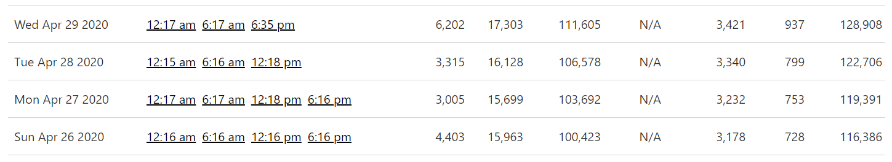
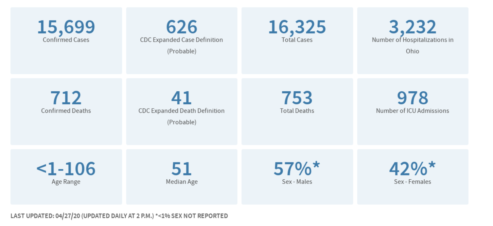
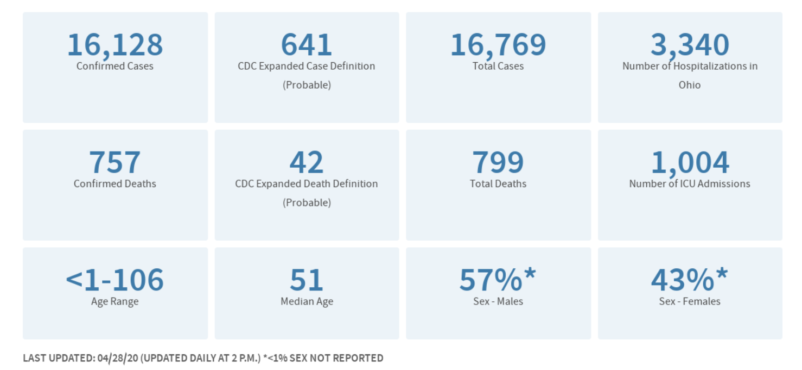
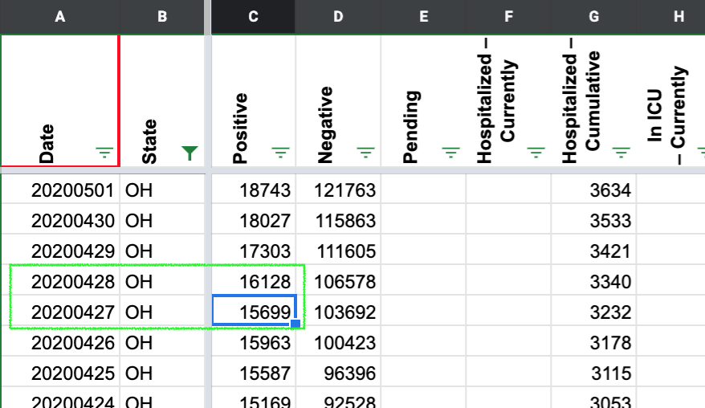

[OH] 4/27-28 Incorrectly recorded only confirmed cases in our lumped column
Issue number 641
the-daniel-lin opened this issue on July 17, 2020 at 10:18 am
Labels Data quality Historical Data
State or US: Ohio
Describe the problem Where we report “positive” as “people with confirmed or probable COVID-19,” we recorded only the confirmed values from 4/27-28. This causes a decrease in our “positive” trend. We should revise these values as such: 4/27: 15699 --> 16325 4/28: 16128 --> 16769
Link to data source CTP Data: 
4/27 Screenshot: 
4/28 Screenshot: 
the-daniel-lin added the label Data quality on July 17, 2020 at 10:18 am
the-daniel-lin added the label Historical Data on July 17, 2020 at 10:19 am
camille-le closed the issue on July 18, 2020 at 10:52 am
BEFORE 
AFTER